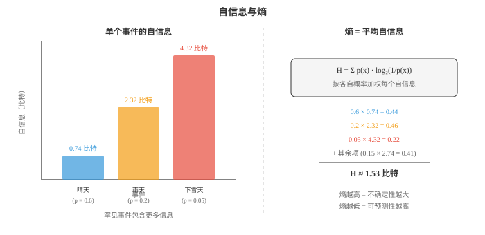
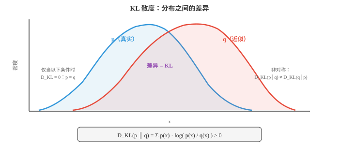

信息论（Information Theory）¶
信息论量化信息、惊讶程度以及概率分布之间的差异。本节介绍熵、交叉熵、KL 散度、互信息和自信息。这些概念支撑着 ML 的每一种分类损失函数、VAE 目标和数据压缩方案。
- 克劳德·香农于 1948 年创立的信息论，为量化信息提供数学框架。它回答的问题包括：一个事件该有多令人惊讶？一条消息携带多少信息？两个概率分布有多不同？
大白话
信息论把“罕见消息更有价值”“预测错得多严重”这类直觉变成可计算的数字。
- 这些问题听起来抽象，却是 ML 损失函数、数据压缩和通信系统的基础。分类中最常用的损失函数交叉熵损失，直接来自信息论。
大白话
分类模型的训练目标并非随意发明，它在惩罚模型把真实结果看得太不可能这件事上，正好等价于信息编码代价。
- 从最简单的问题开始：单个事件携带多少信息？
大白话
先看一条结果本身有多出乎意料，再把所有可能结果的这种意外程度平均起来。
- 自信息（surprisal），也称自信息量，度量一个事件有多令人意外。极有可能发生的事几乎不会带来新信息；罕见事件则带来大量信息。
大白话
预料之中的消息不需要改变你的认识，罕见消息会迫使你大幅更新判断，所以信息量更大。
- 若你住在沙漠，有人告诉你天气晴朗，这没有多少信息；若告诉你正在下雪，信息量极大。自信息将这种直觉形式化：
大白话
晴天在沙漠几乎是默认消息，下雪则打破预期。概率越低，看到它时获得的信息越多。
- 使用 \(\log_2\) 时单位为比特（bits）。公平硬币一次抛掷的自信息为 \(-\log_2(0.5) = 1\) 比特；概率为 \(1/8\) 的事件自信息为 \(\log_2(8) = 3\) 比特。
大白话
一个比特相当于一次公平二选一带来的信息。概率减半一次，意外程度就增加一个比特。
- 为什么用对数而不是直接使用 \(1/p\)？有三个原因：
大白话
对数不是装饰，它让信息量同时满足确定事件为零、独立信息可相加和数值增长可控三项要求。
-
确定事件，即 \(p = 1\)，应给出零信息：\(\log(1) = 0\)，但 \(1/1 = 1\)。
大白话
已经百分之百知道会发生的事不会提供新消息，因此信息量必须是 0。
-
独立事件的信息应可加：\(\log(1/p_1 p_2) = \log(1/p_1) + \log(1/p_2)\)。
大白话
两个独立罕见事件一起发生更惊讶，而对数刚好把这种联合惊讶分解成两份相加。
-
我们需要平滑、性质良好的函数。\(1/p\) 会爆炸，\(\log(1/p)\) 增长温和。
大白话
概率极小时直接取倒数会暴涨得过快，对数增长更温和，也更适合优化和数值计算。
- 熵（entropy）是期望自信息，即从某个分布抽样时每个事件平均获得的信息量。它度量分布的不确定性或“不可预测性”：
大白话
熵不是某一次结果有多意外，而是在这个分布里反复抽样时，平均每次会遇到多少不确定性。

- 公平硬币的熵为 \(H = -0.5\log_2(0.5) - 0.5\log_2(0.5) = 1\) 比特，具有最大不确定性。
大白话
正反面完全均等，事先最难预测，因此公平硬币在两种结果里拥有最大的熵。
- 偏置硬币，\(p = 0.9\)，的熵为 \(H = -0.9\log_2(0.9) - 0.1\log_2(0.1) \approx 0.469\) 比特。不确定性更低，熵也更低。
大白话
90% 情况会出现同一面，预测很容易，偶尔的反面虽惊讶但平均下来信息量较低。
- 确定事件，\(p = 1\)，的熵为 \(H = 0\)，完全没有不确定性。
大白话
如果结果每次都一样，看到结果前后没有任何未知被消除，所以熵为零。
- 所有结果等可能时熵最大。对于 \(n\) 个等可能结果，\(H = \log_2 n\)。公平骰子的熵为 \(\log_2 6 \approx 2.585\) 比特。
大白话
不确定性在可能性均匀分摊时最大。选择越多且越均等，猜中前需要的信息越多。
- 熵的实际含义是压缩（compression）。香农源编码定理指出，在不丢失信息的前提下，无法将数据压缩到低于其熵率。每个像素都等可能的图像，熵最大，无法压缩；主要为白色的图像，熵低，压缩效果好。
大白话
规律越多，文件越能用短描述表达；完全随机的数据没有重复模式可利用，因此几乎压不动。
- 粗略估算：一个灰度像素有 256 个值，最大熵为 8 比特。一张 1080p 灰度图最多有 \(1920 \times 1080 \times 8 \approx 16.6\) 百万比特。真实图像熵低得多，因为邻近像素相关，这正是 JPEG 压缩能工作的原因。
大白话
原始像素逐个存需要按最大可能性付费，但真实图像相邻像素相似，压缩器只记录变化就能省下大量空间。
- 对连续随机变量，离散求和变为积分。微分熵（differential entropy）为：
大白话
连续变量有无限多个可能点，不能逐项相加，只能把各处的密度贡献用积分累计。
- 方差为 \(\sigma^2\) 的高斯分布微分熵为 \(h = \frac{1}{2}\log_2(2\pi e \sigma^2)\)。在所有方差相同的分布中，高斯分布熵最大。这也是高斯分布建模中如此常见的原因之一：除了指定均值和方差外，它作出的假设最少。
大白话
只知道均值和方差时，高斯分布是最不额外假设形状的选择，因此常被当作默认噪声模型。
- 互信息（mutual information）度量知道一个变量能告诉我们另一个变量多少信息。它是观察 \(Y\) 后对 \(X\) 不确定性的减少：
大白话
如果知道 Y 能明显缩小对 X 的猜测范围，二者互信息高；若 Y 对 X 毫无帮助，互信息为零。
- 等价地：
大白话
这个形式把实际联合概率和“假设独立时本该有的概率”作比较，偏离越大说明依赖越强。
- 若 \(X\) 和 \(Y\) 独立，\(p(x,y) = p(x)p(y)\)，互信息为零；依赖越强，互信息越高。
大白话
完全独立时知道一个变量不会改变另一个的分布，所以没有可传递的信息。
- 在 ML 中，互信息用于特征选择，即选择与目标具有高 MI 的特征，信息瓶颈方法，以及评估聚类质量。
大白话
好特征不一定和目标线性相关，但只要能减少目标不确定性，互信息就可能高，因此它能捕捉更广泛关系。
- 交叉熵（cross-entropy）度量用针对分布 \(q\) 优化的编码来编码来自分布 \(p\) 的事件时，平均需要多少比特：
大白话
真实世界按 p 出结果，模型却按 q 做准备。交叉熵衡量这种不匹配会让平均编码或预测付出多少代价。
- 若 \(q\) 与 \(p\) 完全一致，交叉熵等于熵：\(H(p, p) = H(p)\)。若 \(q\) 是差的近似，交叉熵更高；额外比特来自两者的不匹配。
大白话
模型预测完全正确时只付数据本身不可避免的不确定性；预测越偏，额外浪费的信息就越多。
- 这正是交叉熵成为 ML 分类标准损失函数的原因。真实标签定义 \(p\)，即 one-hot 分布；模型预测概率定义 \(q\)。最小化交叉熵会推动 \(q\) 靠近 \(p\)：
大白话
one-hot 标签把全部概率放在真实类别上。交叉熵要求模型也把更高概率放给真实类别，因而自然成为分类训练目标。
- 对真实类别为 \(c\) 的单个样本，它简化为 \(\mathcal{L} = -\log \hat{y}_c\)。损失是模型预测下真实类别的自信息。模型对正确类别赋予的概率越高，损失越低。
大白话
模型若对正确答案只给很小概率，会受到很大惩罚；给接近 1 的概率，损失则接近 0。
- KL 散度（KL divergence），即 Kullback-Leibler 散度，也称相对熵，度量一个分布与另一个分布有多不同：
大白话
KL 散度量的是用 q 冒充真实 p 时会多付出多少平均代价，它不是普通距离，因为交换 p、q 后结果会变。
- KL 散度是用分布 \(q\) 代替真实分布 \(p\) 的“额外代价”。它始终非负，\(D_{\text{KL}} \ge 0\)，且仅当 \(p = q\) 时为零。
大白话
q 完全等于 p 时没有额外损失；只要预测分布和真实分布不同，平均编码代价就不会更低。

- KL 散度不对称：\(D_{\text{KL}}(p \| q) \ne D_{\text{KL}}(q \| p)\)。这种不对称很重要。\(D_{\text{KL}}(p \| q)\) 会惩罚 \(q\) 在 \(p\) 概率高处赋予过低概率，因为 \(\log(p/q)\) 会发散；\(D_{\text{KL}}(q \| p)\) 则惩罚反方向。
大白话
从 p 看 q 时，最怕 q 漏掉 p 认为重要的区域；反过来从 q 看 p 时，关注重点会改变，因此两个方向不能互换。
- 这一不对称导致两种近似风格：
大白话
选择 KL 的方向不是细节，它决定近似分布是尽量覆盖所有可能区域，还是只盯住最可能的峰。
-
最小化 \(D_{\text{KL}}(p \| q)\) 会产生矩匹配（moment-matching）行为：\(q\) 覆盖 \(p\) 的所有模态，但可能过于分散。
大白话
这个方向不愿漏掉真实分布的重要区域，因此 q 往往宁可铺宽一些，把多个峰都罩住。
-
最小化 \(D_{\text{KL}}(q \| p)\) 会产生寻模态（mode-seeking）行为：\(q\) 集中于 \(p\) 的一个模态，却可能遗漏其他模态。这是变分推断使用的方向。
大白话
这个方向更怕 q 把概率放到 p 很低的地方，因此 q 往往缩在一个峰附近，却可能忽略其他合理解释。
- 对模型而言 \(H(p)\) 是常数，因此最小化交叉熵 \(H(p, q)\) 等价于最小化 \(D_{\text{KL}}(p \| q)\)。所以使用交叉熵损失，就是在最小化真实与预测分布间的 KL 散度。
大白话
训练时真实数据分布不由模型控制，固定的熵项可以忽略；降低交叉熵就等价于让预测分布更接近真实分布。
- KL 散度在贝叶斯更新（Bayesian updating）中起核心作用。后验 \(P(\theta | D)\) 是与观测数据一致、且在 KL 散度意义下最接近先验 \(P(\theta)\) 的分布。每个新观测都会更新后验，减少对 \(\theta\) 的不确定性。
大白话
新数据不会无缘无故推翻旧信念，而是在满足数据证据的前提下做最小必要调整，逐步收紧参数的不确定性。
- 在变分自编码器，即 VAE，中，损失函数有两项：重构损失，即交叉熵，和 KL 散度项，它正则化潜在空间，使其接近标准正态分布。
大白话
VAE 一边要求能把输入重构回来，一边要求隐藏表示别太杂乱、要接近标准正态；两项共同平衡记忆能力和可生成性。
- 总结：熵告诉我们一个分布的内在不确定性；交叉熵告诉我们模型近似现实的程度；KL 散度告诉我们二者之间的差距。这三个量构成现代 ML 优化的骨干。
大白话
熵只看真实分布本身，交叉熵看模型编码真实数据的代价，KL 则把两者相减后留下纯粹的模型失配成本。
编程任务（使用 CoLab 或 notebook）¶
-
计算多个分布的熵，并验证给定结果数目时均匀分布具有最大熵。
import jax.numpy as jnp def entropy(p): """Compute entropy in bits. Filter out zero-probability events.""" p = p[p > 0] return -jnp.sum(p * jnp.log2(p)) # Fair die fair = jnp.ones(6) / 6 print(f"Fair die entropy: {entropy(fair):.4f} bits (max = log2(6) = {jnp.log2(6.):.4f})") # Loaded die loaded = jnp.array([0.1, 0.1, 0.1, 0.1, 0.1, 0.5]) print(f"Loaded die entropy: {entropy(loaded):.4f} bits") # Deterministic det = jnp.array([0.0, 0.0, 0.0, 0.0, 0.0, 1.0]) print(f"Deterministic: {entropy(det):.4f} bits") # Fair coin coin = jnp.array([0.5, 0.5]) print(f"Fair coin entropy: {entropy(coin):.4f} bits") -
计算真实分布与多个近似分布之间的交叉熵和 KL 散度。验证 \(D_{\text{KL}}(p \| q) = H(p, q) - H(p)\)。
import jax.numpy as jnp def cross_entropy(p, q): return -jnp.sum(p * jnp.log2(jnp.clip(q, 1e-10, 1.0))) def kl_divergence(p, q): mask = p > 0 return jnp.sum(jnp.where(mask, p * jnp.log2(p / jnp.clip(q, 1e-10, 1.0)), 0.0)) def entropy(p): p = p[p > 0] return -jnp.sum(p * jnp.log2(p)) p = jnp.array([0.4, 0.3, 0.2, 0.1]) # true distribution for name, q in [("perfect match", p), ("slight mismatch", jnp.array([0.35, 0.30, 0.25, 0.10])), ("big mismatch", jnp.array([0.1, 0.1, 0.1, 0.7]))]: h_p = entropy(p) h_pq = cross_entropy(p, q) kl = kl_divergence(p, q) print(f"{name:20s}: H(p)={h_p:.4f}, H(p,q)={h_pq:.4f}, " f"KL={kl:.4f}, H(p,q)-H(p)={h_pq-h_p:.4f}") -
对两个不同分布计算 \(D_{\text{KL}}(p \| q)\) 和 \(D_{\text{KL}}(q \| p)\)，说明 KL 散度并不对称。
import jax.numpy as jnp def kl_div(p, q): mask = p > 0 return float(jnp.sum(jnp.where(mask, p * jnp.log2(p / jnp.clip(q, 1e-10, 1.0)), 0.0))) p = jnp.array([0.9, 0.1]) q = jnp.array([0.5, 0.5]) print(f"D_KL(p || q) = {kl_div(p, q):.4f}") print(f"D_KL(q || p) = {kl_div(q, p):.4f}") print(f"Not the same! KL divergence is asymmetric.") -
模拟训练过程中的交叉熵损失。构造真实 one-hot 标签，展示随着模型预测概率改善，损失如何降低。
import jax.numpy as jnp import matplotlib.pyplot as plt # True label: class 2 out of 4 true_label = jnp.array([0, 0, 1, 0]) # Simulate improving predictions steps = [] losses = [] for confidence in jnp.linspace(0.25, 0.99, 50): # Model becomes more confident in class 2 remaining = (1 - confidence) / 3 pred = jnp.array([remaining, remaining, confidence, remaining]) loss = -jnp.sum(true_label * jnp.log(jnp.clip(pred, 1e-10, 1.0))) steps.append(float(confidence)) losses.append(float(loss)) plt.figure(figsize=(8, 4)) plt.plot(steps, losses, color="#e74c3c", linewidth=2) plt.xlabel("Model confidence in true class") plt.ylabel("Cross-entropy loss") plt.title("Cross-entropy loss decreases as predictions improve") plt.grid(alpha=0.3) plt.show()